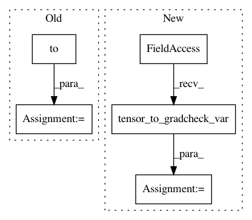

a828315185a9dc8b21ec8e5dbead9044caf0d3a2,test/geometry/test_conversions.py,TestConvertAtoH,test_gradcheck,#TestConvertAtoH#Any#Any#,458
Before Change
@pytest.mark.parametrize("batch_shape", [
(10, 2, 3), (16, 2, 3)])
def test_gradcheck(self, device, batch_shape):
points_h = torch.rand(batch_shape).to(device)
// evaluate function gradient
points_h = tensor_to_gradcheck_var(points_h) // to var
assert gradcheck(kornia.convert_affinematrix_to_homography, (points_h,),
raise_exception=True)
After Change
def test_x_rotation(self, device, dtype):
half_sqrt2 = 0.5 * np.sqrt(2)
angle_axis = torch.tensor([kornia.pi / 2, 0., 0.], device=device, dtype=dtype)
expected = torch.tensor([half_sqrt2, half_sqrt2, 0., 0.], device=device, dtype=dtype)
quaternion = kornia.angle_axis_to_quaternion(angle_axis)
assert_allclose(quaternion, expected, atol=1e-4, rtol=1e-4)
In pattern: SUPERPATTERN
Frequency: 3
Non-data size: 5
Instances
Project Name: arraiy/torchgeometry
Commit Name: a828315185a9dc8b21ec8e5dbead9044caf0d3a2
Time: 2020-12-22
Author: sj8716643@126.com
File Name: test/geometry/test_conversions.py
Class Name: TestConvertAtoH
Method Name: test_gradcheck
Project Name: arraiy/torchgeometry
Commit Name: 5c9356d3dbcd44c3cd7f833651a3b542250c2699
Time: 2020-11-30
Author: edgar.riba@gmail.com
File Name: test/enhance/test_core.py
Class Name: TestAddWeighted
Method Name: test_gradcheck
Project Name: arraiy/torchgeometry
Commit Name: a828315185a9dc8b21ec8e5dbead9044caf0d3a2
Time: 2020-12-22
Author: sj8716643@126.com
File Name: test/geometry/warp/test_homography_warper.py
Class Name: TestHomographyWarper
Method Name: test_gradcheck